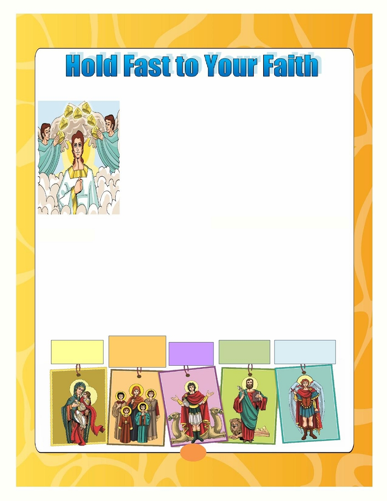
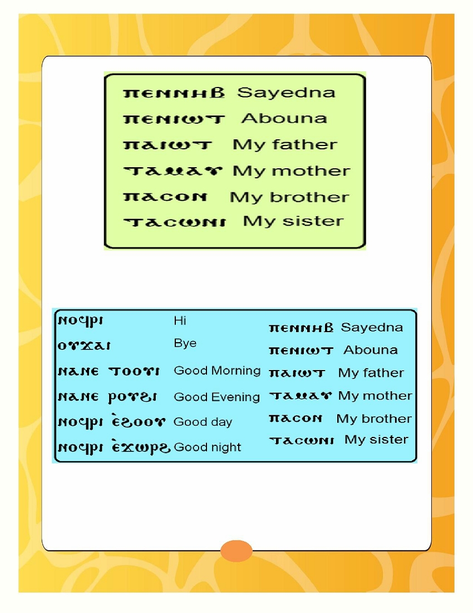

His Holiness Pope Tawadros II
118 Pope of Alexandria and
th
Patriarch of the See of Saint Mark
Page
St Mark's Festival Anthem- Hold fast what you have
2
Hold fast what you have
3
Hold Fast to Your Faith - Our Friends in Heaven
4
Hold Fast to Your Holy Bible - St. Pintenous
6
Hold Fast to Your Spirituality - Prayer
8
Hold Fast to Your Church's Rites-Rebuilding the House of God
11
Memorization
13
Coptic
14
Hymns & Rituals
18
1
St. Mark's Festival 2015 Anthem
Hold fast what you have,
That no one may take your crown,
Hold fast what you have
What you have hold fast
Grains of Wheat we sure are planted
Here on earth we live and die,
Deep in heart are always chanted,
God's own promises we live by
Grains of Wheat we're humbly waiting
For God's rain to bless our land
We bring fruits as we were told,
Thirty, sixty 'n' a hundred fold
Hold fast what you have,
That no one may take your crown,
Hold fast what you have
What you have hold fast
Grains of Wheat the days are counted,
Here on earth we live and die,
Enemy is growling out your doors,
Give no slumber to your eyes
Narrow is the gate, broken is the road,
Where we're marching carrying a load,
Upwards far above the skies,
Keep your treasure and your heart
Hold fast what you have,
That no one may take your crown,
Hold fast what you have
What you have hold fast
2
What does hold fast mean?
Hold fast means to be tightly attached to something.
The Holy Bible reminds us to "hold fast" many times.
What should we hold fast to?
When a fisherman is fishing on his boat he throws an anchor so his boat
will hold fast to the sand at the bottom of the sea. We as children of
our Lord Jesus Christ look to heaven and throw our anchor.
This anchor is to tightly attach ourselves to our Lord Jesus Christ.
This anchor is our faith, the Holy Bible, the Church, the Sacraments,
our prayers, God's love and love to others.
When we hold fast to our Lord Jesus Christ we will receive our crown in
Heaven that our Lord Jesus Christ promised us!
"Behold, I am coming quickly!
Hold fast what you have,
that no one may take your crown. "
Revelation 3:11
3

Our Friends in Heaven
1. We can have friends in Heaven like the angels and the
saints. Many of these friends lived on Earth and they love God
very much. They did many good things until they reached
Heaven.
2. Stories of the saints were written a long time ago and
they were passed down to us. These stories teach us about
their life, help us to get closer to them and love
them more. The saints are our friends!
3. Even though their lives ended on Earth they are alive in
Heaven with God. God said about Himself, "He is not the God of the dead but of the
living" Luke 20:38. Because the saints are living in Heaven we can talk to them every
day, they can see and hear us. When we need anything or have a problem we can pray
and ask God and say through the intercessions of the saints, my friends, Lord hear my
prayer.
4. Was does intercession mean? Intercession of the saints means they are
praying for us because they love us and we too love them so much
The Holy Bible says "Pray for one another" James 5:16
These are some of our beloved saints .
The mother,
My Mother,
St. Dolagy and
My friend,
My friend,
My friend,
St. Mary
her 4 children
St. Mina
St. Mark
Archangel Michael
4
Activity: Write the names of our friends, the Saints.
_______________
_______________
_______________
_______________
_______________
On the feast of each saint we go to church to celebrate their feast because we love them.
Our Church honors them in so many ways. How do we honor the saints in our Church?
We sing many hymns
Abouna raises
We name churches after the saints.
telling the story of
incense before
The name of my church is:
the saints and their
the icon and
_________________________
love for God.
mentions all of
One of the beautiful
hymns we pray in the
their names
liturgy is ' Through the
during the
Intercessions of the
We light
liturgy
Theotokos St Mary' .
candles
In this hymn we ask for
in front of the
the intercessions of
saint's icon
St. Mary in front of
God.
5
St. Pintenous Holds Fast to God's Word
The Bible is the Holy Book. The words of the Holy Bible are God's words to us, they
can never be added, removed or changed. Many saints worked very hard to give us the
words of the Holy Bible. There was a saint because of his love and care for the Holy
Bible, he created a language especially so we can understand it. He also
translated the words of the Holy Bible. This saint is St. Pintenous
St. Pintenous was born more than 100 years
after the birth of our Lord Jesus Christ. St. Pintenous
read and studied the Holy Bible and the rituals of the
church very well. He taught many people. Because of
his great knowledge in the Christian faith he became
in charge of the Theological School of Alexandria. This
school taught them the Christian faith and rituals
(arrangement). Many people from around the world
came to learn at this school.
St. Pintenous holds fast to the Holy Bible. He loved the Holy
Bible and he made sure he obeyed all of God's words in the
Bible. He wished everyone was able to read, understand and
obey God's word and commandments. At that time, all the
church readings that were read in Egypt were read in the
Greek language. Many people did not know how to read or
write Greek. St Pintenous took 25 letters from the Greek
language and 7 letters from the ancient Egyptian language and
put together a new, easy language that people can read and
called it the Coptic Language .
6
He used this new language to translate the entire Holy Bible from Greek to Coptic. He
translated it exactly how he received it from our fathers the saints. The Coptic
language is very important because he translated the Bible in Coptic and our Hymns
and Prayers of our Church are also in the Coptic language.
He
not
only
translated
the
Holy Bible in the Coptic language he
also
explained
it in
the
Coptic
language, so they can understand God's
word. St. Pintenous was called,
"The Explainer of God's Word"
He also taught the Bible in different
countries including India.
We should also hold fast to the Holy Bible and we
should read the Bible from a young age,
to know and understand God's word, as the verse says:
" and that from childhood you have known the Holy Scriptures"
2 Timothy 3:15
7
Prayer
What is prayer? Prayer is the best and most beautiful time we can spend with
our Lord Jesus Christ. He is the person who loves us the most and we too love Him
very much because He is our Father. During prayer we talk with our Lord Jesus Christ
and we are sure that He hears us and knows what we want.
It is exactly like what the verse says "I loved, because the Lord will hear the
voice of my supplication" (Psalm 114:1) . And during prayer we try to understand and
pay attention to every word, so we don't just repeat words.
We can pray at any time of day:
When we wake up in the morning:
Before and after we eat:
We thank God for keeping us safe
We thank the Lord Jesus Christ for the food He
through the night and we ask Him to
provided for us and we ask Him
be with us for the rest of the day.
to give to the poor as well.
Before
At the end of
we start
the day:
working on
We thank Him because
the day has ended
anything:
peacefully, tell Him about
So the Lord Jesus everything that happened
Christ will be on our with us on that day and
side and help us
ask Him to keep us safe
complete our work.
through the night.
8
We also pray no matter what happens to us:
We tell Him
We tell Him
We tell Him
We ask Him to
so He will be
so He would
so He would
forgive us and
happy with
help us and
stand with
we promise
us.
make us
us and to
Him that we
joyful.
give us
wouldn't do
peace.
it
again.
When we pray we should do so in order:
1. First, we do the sign of the cross and say
"Our Father who art in Heaven .."
2. We thank our Lord Jesus Christ for everything
3. Tell Him about everything that happened to me
during the day
4. Ask Him to forgive me for anything I did wrong
5. Ask Him for anything I want
6. Ask the Lord Jesus Christ for anyone who is
sick or has a problem
7. Finally, we ask for the intercessions of our
friends the Saints and say "Our Father who
art in Heaven .." and do the sign of the cross
Our Lord Jesus Christ cares about us and
hears us. He wants to hear us, talk to Him in
prayer because we are important to Him and He
loves us very much.
9
Activity: Now that you learned how to pray, fill the blank spaces with what you
would say in your prayers.
"In the name of the Father, the Son, and the Holy Spirit, One God, Amen."
O Lord, make us worthy to say thankfully: Our Father who art in Heaven "
My Lord Jesus Christ who loves little children,
I am your beloved son/daughter ____________________ (your name) .
I want to thank You so, so much for everything that You gave me.
I thank You so much for my mom and dad and
my brothers and sisters __________, __________, __________. (their names) .
I also want to thank You for my friends
_________, _________, _________, _________. (their names) .
Lord, I want to tell You about everything I did all day today
I ________________________________, ________________________, and
____________________________; then I _____________________________
and ______________________________________.
Something made me so happy today, ______________________
_________________________________________________.
But what made me sad today,_____________________________
___________________________________________________.
Lord, I love You and I want You to forgive me for what I did wrong;
___________________________________________________.
I know You hear me, and I want You to help me talk to You all the time in my prayer.
Please hear my prayer, through the intercession of (St. Mary) and my friends the
Saints, ______________________, ______________________,
______________________, and ______________________. (their names)
Hear me when I say with the voice of angels, "Our Father who art in Heaven "
"In the name of the Father, the Son, and the Holy Spirit, One God, Amen."
10
Rebuilding the House of God after the Captivity
Ezra 2 & 3
The people of God were living in their city; Jerusalem, until the King of Babylon came
and took them captives (prisoners) with him to his city. God promised His people that
they will go back to their land, and after 70 whole years God fulfilled His promise to the
people of Israel and returned them back to their land.
When the people went back to their city they saw
something that made them very upset. They found that
their beloved city is completely destroyed and without
walls. They also saw that the House of God was also
destroyed. So they decided that they are going to rebuild
the city.
11
They needed their homes to stay in, but they decided to rebuild the house of God
first- the altar and the temple- because they really wanted to go back to praying to
God and thank Him because He returned them from captivity.
They also wanted to go back to offer sacrifices like they were used to.
So they collected money from each other to pay the workers and to buy wood.
They split the work among them and everyone did what they can, for example
some
people
offered
silver
and
gold,
others
bought
wood.
The carpenters and the builders built the House of the Lord. Some people were
organizing all the work This way everyone participated with what they can offer to build the
House of God.
Every one of them did their part with honesty and did not say
"this is not my job", that is why the bible describes them by saying that
"the people gathered together as one man" (Ezra 3:1). And because
they helped each other, they finished the work and were able to rebuild
the temple. They thanked God and were very happy that now they have
the Temple back.
12
THE CONCLUSION OF EVERY HOUR
1.
Have mercy on us, O God, and have mercy on us,
who, at all times and in every hour,
in heaven and on earth, is worshipped and glorified,
Christ our God, the good, the long suffering,
the abundant in mercy, and the great in compassion,
who loves the righteous and has mercy on the sinners of whom I am chief;
who does not wish the death of the sinner but rather that he returns and lives,
who calls all to salvation for the promise of the blessings to come.
Lord receive from us our prayers in this hour and in every hour.
Ease our life and guide us to fulfill Your commandments.
Sanctify our spirits. Cleanse our bodies. Conduct our thoughts.
Purify our intentions. Heal our diseases. Forgive our sins.
Deliver us from every evil grief and distress of heart.
Surround us by Your holy angels, that, by their camp,
we may be guarded and guided, and attain the unity of faith,
and the knowledge of Your imperceptible and infinite glory.
For You are blessed forever. Amen.
2.
13
Our Lord spent about 4 years in Egypt as a baby.
He spoke to the people in Egypt in their language,
which was the Coptic language at that time.
.
THE COPTIC ALPHABET
14
15
16

17
18
19